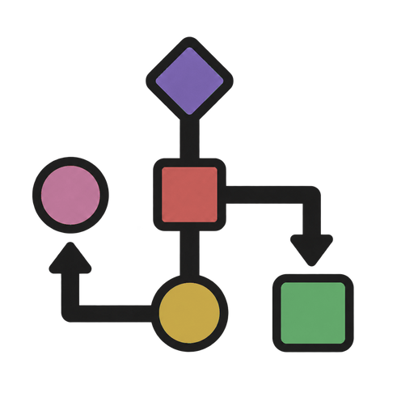

Problems
Work through the problems in any order. Each includes questions, hints, a proof, and Python code.

Allan's Handbook of AlgorithmsTen interview problems covering sorting, greedy algorithms, graphs, and dynamic programming.
Work through the problems in any order. Each includes questions, hints, a proof, and Python code.